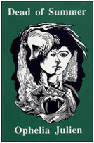

*This book must be purchased through the author. Please contact me via email to arrange shipping and payment options. Thank you.
*This book must be purchased through the author. Please contact me via email to arrange shipping and payment options. Thank you.
Title: Dead of Summer
Author: Ophelia Julien
Published By: University Editions
ISBN: 1-56002-065-2
Book Description: The story revolves around the renovation of and old house, recently designated a historical site. The house is haunted by the presence of Elizabeth, a young girl, evil and attractive, who was murdered at the age of sixteen by her own brother.
Annie Thorpe and Kevin McHugh are two sixteen-year olds who have volunteered to work on the renovation during their summer vacation. Both of them are clairvoyant. They meet at the old house, and are almost immediately affected by Elizabeth's presence. Elizabeth, who intends to have her chance at life, has recognized the abilities of the two and works to possess them both.
Elizabeth has succeeded in taking Annie. Will she succeed
in possessing Kevin, also... or will Annie and Kevin use their combined
clairvoyant powers to destroy Elizabeth?